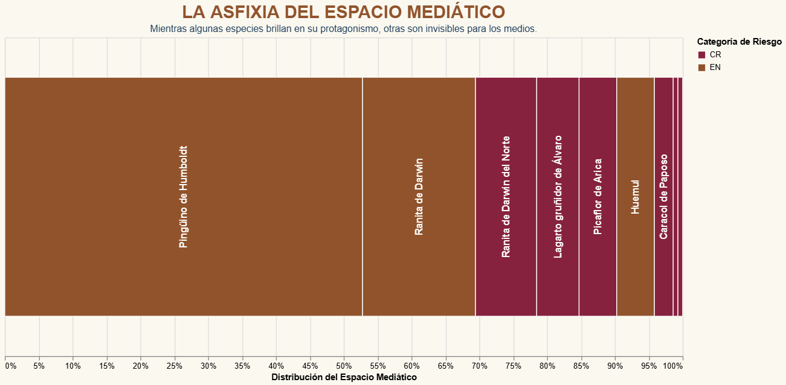

¿Alguna vez has sentido que tienes un hermano o hermana que se roba toda la atención en las reuniones familiares mientras tú pasas casi desapercibido? Para la ranita de Darwin del norte (Rhinoderma rufum, CR), esta no es una suposición, sino su reality diaria frente a su pariente del sur. Al analizar cuantitativamente el ecosistema informativo de los últimos seis meses, descubrimos que mientras la ranita de Darwin del sur (Rhinoderma darwinii, EN) es protagonista en el 100% de las coberturas donde es nombrada, su "hermana" del norte es protagonista en solo el 30,7% de las ocasiones, apareciendo como eje central en apenas 4 de las 13 noticias en las que figura. Los datos demuestran de entrada una premisa clave: la atención pública no se distribuye de forma proporcional según la urgencia biológica de conservación.

Figura 1: Muro de la Invisibilidad. Proporción del espacio informativo acaparado por especies seleccionadas en la prensa chilena.
Este fenómeno responde a una dinámica de satisfacción: el espacio mediático funciona bajo una estructura con un tamaño fijo; si un actor ingresa con un megáfono y ocupa la mayor parte del lugar, los demás se quedan sin sitio para ser escuchados. En nuestra prensa actual, ese "megáfono" lo tiene el pingüino de Humboldt (Spheniscus humboldti, EN), quien acapara de manera absoluta el centro de la escena en las 76 noticias donde se le nombra. A esto le llamamos la asfixia del espacio mediático: cuando unas pocas especies de alto carisma concentran la atención, la gran mayoría de las especies en riesgo crítico quedan relegadas a la periferia de la información pública. De hecho, el 95.3% de las especies bajo amenaza biológica catalogadas por la autoridad ambiental ni siquiera logran registrar una sola mención en el relato público, demostrando que el silencio también opera como una forma de comunicación masiva en la agenda de los medios.
Esta falta de equilibrio condena a gran parte de la fauna con urgencia biológica extrema a sobrevivir bajo un profundo anonimato periodístico. Por ejemplo, mientras el pingüino y el huemul (Hippocamelus bisulcus, EN) dominan de forma regular las portadas, insectos endémicos como el borrachito (Buprestis novemmaculata, CR) o aves como el picaflor de Juan Fernández (Sephanoides fernandensis, CR) registran apenas una mención incidental en el semestre, lo que se traduce en un 0% de protagonismo editorial. Incluso el caracol de Paposo (Plectostylus broderipii, CR), cuya situación de supervivencia es crítica, logra ser el eje del relato en solo 1 de las escasas 4 noticias que logran publicarse sobre él, quedando el 75% de su cobertura reducida a un segundo plano.
Entender y transparentar estas diferencias es fundamental porque la visibilidad en los medios ayuda a que las personas conozcan, empaten y protejan nuestra biodiversidad. Si el relato nacional se concentra de forma sistemática en los mismos personajes, la opinión pública tiende a ignorar la urgencia de los ecosistemas locales. El análisis estadístico nos enseña que para proteger eficazmente nuestra fauna, es imperativo democratizar la conversación diaria, abriendo el espacio para que aquellas especies tradicionalmente marginadas de la prensa también tengan la oportunidad de contar su historia.
Nota metodológica: Esta investigación analizó cuantitativamente la cobertura de la prensa nacional durante los últimos seis meses. El marco de trabajo contempló el catastro oficial del Reglamento de Clasificación de Especies (RCE) del Ministerio del Medio Ambiente (MMA), que registra más de 200 especies bajo amenaza biológica. Para efectos del análisis, se filtraron aquellas especies en Peligro Crítico (CR) que efectivamente registraron apariciones y, con fines estrictamente comparativos, se seleccionaron manualmente tres especies En Peligro (EN) de alto carisma y reconocimiento público (el pingüino de Humboldt, el huemul y la ranita de Darwin del sur).